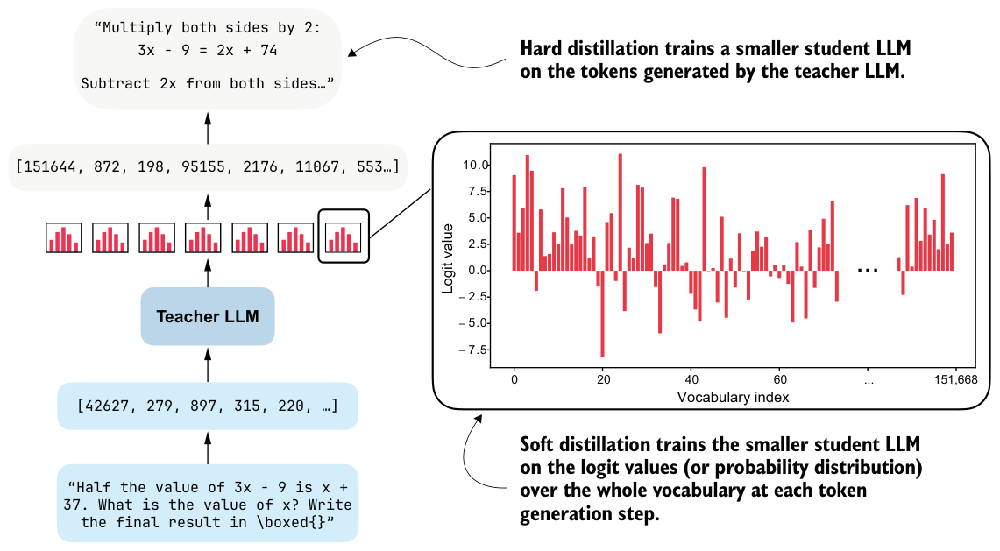
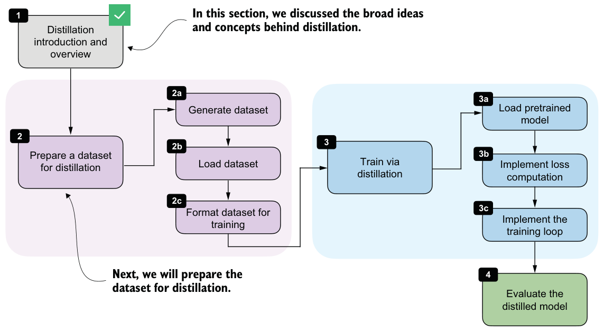

8.1Introducing model distillation for reasoning tasks
Model distillation involves training a smaller LLM, the student, on outputs produced by a larger LLM, the teacher. For reasoning models, these outputs usually include not only the final answer but also the intermediate reasoning trace that leads to it.
Distillation is important because the strongest reasoning models are often too large and expensive to work with directly. For example, DeepSeek-R1 has 671 billion parameters. Systems at that scale are expensive to develop and deploy, and they are far beyond what most practitioners can run on local hardware. The team behind DeepSeek-R1 created smaller model variants by distilling the 671-billion-parameter teacher model. We will follow the same basic idea in this chapter, but at a scale that is practical for this book.
Throughout this book, we have deliberately worked with small models rather than training a very large LLM from scratch, but the workflow in this chapter is the same as for larger models. We’ll use a stronger teacher to generate reasoning traces and then train a smaller student to reproduce them. In our setup, this distillation stage will take only a fraction of the time as for larger models. Our distillation training run will take about 3 hours on a DGX Spark and use about 15 GB of RAM, whereas even a few GRPO rounds in chapter 6 took around 12 hours and 70 GB of RAM on the same hardware.
Distillation can also be more effective than training a small model using reinforcement learning with verifiable rewards (RLVR). For example, the DeepSeek-R1 paper reported that its smaller distilled variants outperformed comparable models trained with reinforcement learning alone. In that setup, the largest DeepSeek-R1 model, with 671 billion parameters, acted as the teacher and generated the supervision used to train smaller student models.
There are two main types of distillation: hard distillation and soft distillation. In hard distillation, the student is trained on text generated by the teacher, so the teacher’s tokens are treated as the targets. In soft distillation, the student is trained to match the teacher’s probability distribution over the vocabulary by minimizing the KL divergence, a measure of how different two probability distributions are. These two approaches are illustrated in figure 8.2.

As illustrated in figure 8.2, one option is pure hard distillation. Here, we use only the teacher-generated text as the training target. If you’re familiar with the typical LLM training pipeline, which is covered in more detail in my previous book, Build A Large Language Model (From Scratch), hard distillation is just supervised fine-tuning on synthetic data. This is also the setup used for the smaller DeepSeek-R1 distilled models. A large teacher model generates reasoning traces and answers, and the student model is fine-tuned to reproduce them. According to the DeepSeek-R1 paper, for small models this distillation approach can result in higher accuracy than training with reinforcement learning. The main practical advantage of hard distillation is that we only need access to the teacher’s generated text, not its logits.
The second option is pure soft distillation. Instead of matching only the teacher’s chosen tokens, the student is trained to match the teacher’s full output distribution of each token over the whole vocabulary. This gives the student richer information about which alternative tokens the teacher considered plausible, but it requires access to teacher logits or log probabilities at training time.
A third option combines hard and soft distillation. This is the classic knowledge-distillation setup popularized earlier in computer vision, such as in the paper “Distilling the Knowledge in a Neural Network,” by Geoffrey Hinton, Oriol Vinyals, and Jeff Dean. In this case, we train on the teacher’s actual output tokens while also encouraging the student to match the teacher’s full distribution.
In practice, hard distillation is much more common for LLMs, partly because full teacher logits are usually inaccessible. Proprietary systems such as ChatGPT or Claude may expose generated text, but they generally do not expose the full vocabulary distribution needed for classical soft distillation.
Even when logits are available, soft distillation is more cumbersome than hard distillation. The student and teacher usually require the same tokenizers so that their vocabulary distributions line up, so this approach is easier within the same model family. It is also much more expensive to store and use full token distributions for long reasoning traces. By comparison, storing plain text outputs is cheap and simple.
In this chapter, we’ll focus on hard distillation in the style of DeepSeek-R1 because it is the more practical setup for most readers. The steps we’ll discuss in this chapter are summarized in figure 8.3.

With this overview in place, we can now move from the high-level ideas behind distillation to the practical steps required to implement it. In the next section, we’ll begin by preparing a dataset for distillation, which will serve as the foundation for training the student model.